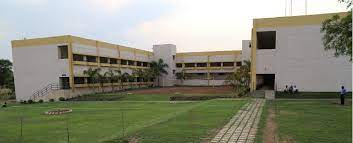
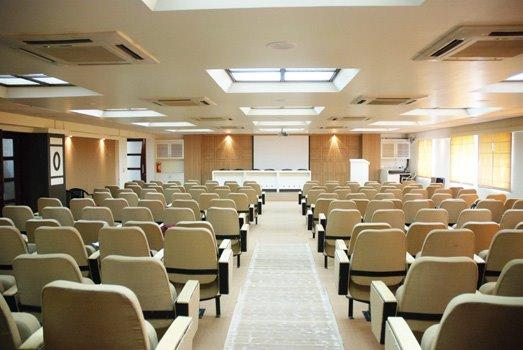

Maharshi Karve Stree Shikshan Samstha (MKSSS), Pune, is the 127 years old Samstha committed to “Empowerment & enrichment of Women through Education” and has significantly contributed towards making women professionally educated and self-reliant. Samstha’s Cummins College of Engineering for Women, Nagpur, Maharashtra is empowering the women in Engineering over a decade for now.
Cummins College of Engineering for Women (CCoEW) is NAAC accredited Instiute and was established by the Cummins India Foundation and Maharshi Karave Stree Shikshan Samstha in Nagpur in 2010. It is an accredited institution encouraging creativity and quality in teaching and learning processes for the intellectual growth of its students. The college has three Engineering Departments CE, ETC, & ME. The institute has an excellent placement record with a number of top-ranking companies visiting the campus every year.
 